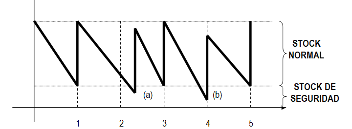

Como ya hemos visto, el momento y la cantidad a aprovisionarse en el sector llegan a resultar confusos y, en ocasiones, difíciles de situar temporal y cuantitativamente. No obstante, el almacén debe ser analizado y tenidos en cuenta los diferentes tipos de stocks que se almacenan. Todo ello debe tener como propósito final determinar:
- La cantidad económica del pedido
- El momento del pedido
- Los costes del almacenamiento
Por ello teneos en cuenta los diferentes tipos de stock que mantenemos:
a) STOCK NORMAL: También se le denomina como stock de funcionamiento u operativo, que es la cantidad de producto que habitualmente mantenemos activo en nuestro almacén para garantizar el funcionamiento.
b) STOCK DE SEGURIDAD: Es el que se añade al anterior como medio de protección ante la posibilidad de retrasos en los aprovisionamientos o variaciones e la demanda prevista.
c) STOCK MÁXIMO: Es el lote máximo de almacenamiento que nos marcamos y que figurará en las fichas de inventario permanente. Este límite dispondrá de medios mecánicos de aviso en los sistemas de control informatizados.
d) STOCK MÍNIMO: Es la cantidad de producto por debajo de la cual jamás debe estar en el almacén y que figurará en las fichas de inventario permanente. Este límite dispondrá, como en el caso anterior, de medios mecánicos de aviso en los sistemas de control informatizados.
e) STOCK MEDIO: Es el promedio de existencias que mantiene la empresa en el almacén. Su cálculo es:
EXISTENCIAS MEDIAS = (EXISTENCIAS MÁXIMAS + EXISTENCIAS MÍNIMAS) / 2
En el gráfico que a continuación se indica se puede observar cómo el uso del stock de seguridad contribuye de forma fundamental a que no exista ruptura en el ciclo de producción:

En el momento (a) existe un retraso en os aprovisionamientos y, como consecuencia de ello, es el stock de seguridad el que responde para que la cadena pueda seguir produciendo. En el momento (b) es un aumento de la demanda lo que provoca el agotamiento del stock normal.